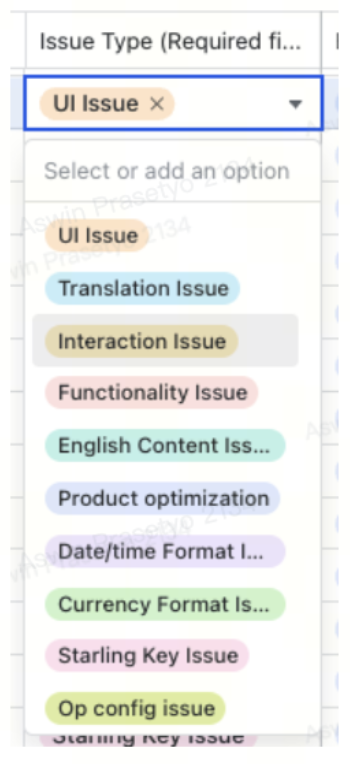
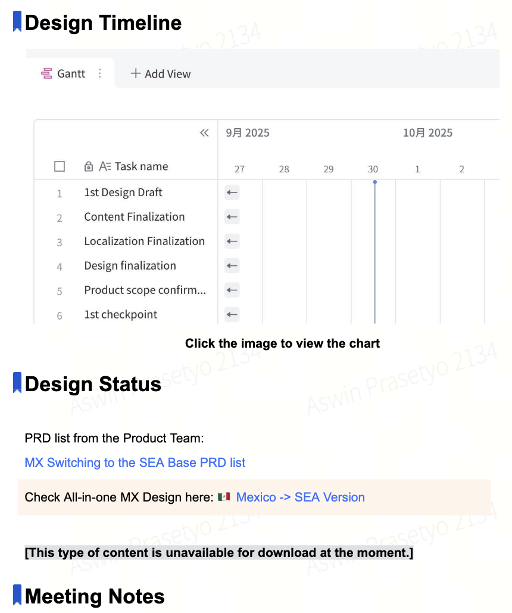
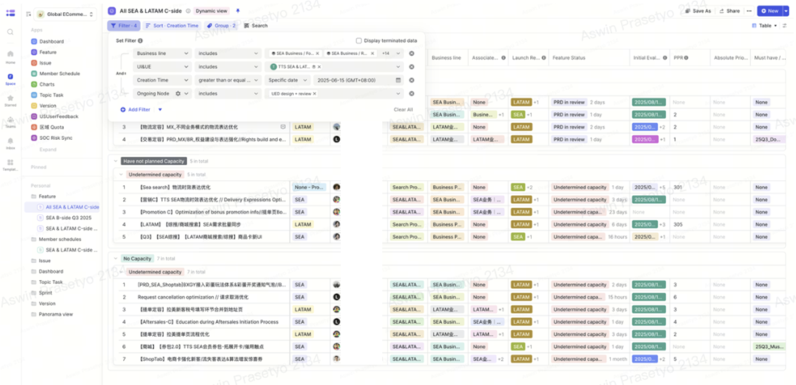
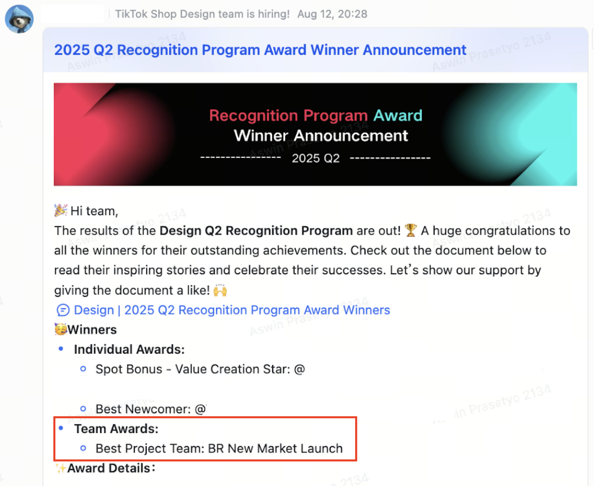

This project focused on improving cross-regional collaboration and operational effectiveness within the TikTok Shop Global Design organization during the expansion of TikTok Shop services into Latin America, particularly Brazil and Mexico. The Southeast Asia Design Team, consisting of designers and copywriters across Indonesia, Singapore, and Mainland China, was tasked with supporting large-scale product localization and launch readiness efforts while collaborating remotely with localization, operations, and engineering teams across multiple regions and significantly different time zones.
As project lead from the Design Team side, I co-directed with senior design leaders in Shanghai to establish more effective collaboration systems, communication cadences, delivery checkpoints, and centralized reporting workflows to support large-scale execution across teams. Beyond improving design delivery visibility and cross-functional alignment, the initiative also helped uncover long-standing operational inefficiencies related to issue ownership and launch reporting processes. Through more structured accountability systems and transparent progress tracking, the project contributed to smoother market launch readiness, improved execution quality, and stronger operational alignment across global teams.
About TikTok Shop
TikTok Shop is an integrated social commerce platform within TikTok that enables users to discover, engage with, and purchase products directly through short-form videos, livestreams, and creator-driven content without leaving the app. As one of the fastest-growing e-commerce ecosystems in Southeast Asia, TikTok Shop combines entertainment, community, and shopping experiences into a content-driven marketplace that reshapes how users interact with brands, sellers, and online commerce.
TikTok Shop SEA Design Team consisted of team members across Indonesia, Singapore, and Mainland China, collaborating to build localized commerce experiences for Southeast Asian markets. Product experiences within TikTok Shop SEA were uniquely shaped by regional legal regulations, market-specific user behaviors, operational limitations, and different end-to-end shopping journeys across countries. As a result, design solutions often required close cross-functional collaboration and localized strategic thinking to ensure product experiences remained relevant, scalable, and compliant across diverse markets.
"TikTok Shop Brazil and Mexico Market Launch received the 2025 Q2 Design Recognition Award for Best Project Team, recognizing the power of collaborative execution and operational excellence beyond borders."
Understanding the Context
Taking Responsibility for Design Redirection
Prior to the Brazil and Mexico market relaunches, TikTok Shop had already expanded into several international markets, including Europe and Japan. However, both launches faced significant operational challenges during pre-release testing phases, resulting in high volumes of reported “design-related” issues that created downstream pressure across Product and Engineering teams. Many fixes had to be rushed through overtime work to meet launch deadlines, which eventually raised concerns among senior leaders that there were deeper problems within the overall market launch preparation process.
At the same time, TikTok Shop decided to revamp the Brazil and Mexico experiences using the Southeast Asia (SEA) product foundation instead of the existing US-based experience, which was considered less compatible with local market needs. The SEA Design Team was entrusted to support the LATAM relaunches due to its strong track record in delivering stable, localized, and business-impact-driven product experiences across Southeast Asian markets.
As part of this initiative, my Senior Design Leader was appointed to oversee the LATAM relaunch effort, while I was asked to support the initiative more closely as project lead from the Design Team side. Beyond preparing design deliverables, our responsibility quickly evolved into rebuilding operational confidence and ensuring the LATAM launches would not repeat the same issues experienced in previous market expansions.
Key responsibilities included:
Coordinating end-to-end design readiness across product flows, content design, and localization efforts
Supporting cross-functional collaboration between Design, Content Designers, Promotional, and Localization teams (content translators)
Establishing more structured communication and operational visibility throughout the launch preparation process
Improving accountability and issue tracking during pre-launch testing and release readiness phases
Investigating the Root Causes
Before establishing new workflows for the LATAM launches, I initiated deeper discussions with my Senior Design Leader and Head of Design to better understand what had actually gone wrong during the Europe and Japan market launches. Through operational reviews and retrospective analysis, we discovered that many reported “UI issues” originated during internal pre-launch testing sessions where stakeholders reviewed staging environments before official releases.
The reported visual issues varied across multiple product touchpoints, including:
Missing, broken, or inconsistent design components and other visual elements
Localized text overflowing containers due to translation length differences
Interaction behaviors that did not match intended design specifications
Styling inconsistencies across coupons, promotions, and purchase flows in general
However, after reviewing the issue reports more deeply, I identified a much larger systemic problem behind the operational chaos: inaccurate issue categorization and unclear accountability structures. Any issue related to visual presentation or interaction behavior was automatically labeled as a “UI Issue”, which falls under the Design Team's responsibilty, without proper investigation into its actual root cause. In reality, the majority of visual issues were caused by front-end implementation inconsistencies or engineering execution gaps rather than mistakes originating from the Design team itself.

Inaccurate issue categorization led to all visual problems reported as "UI Issues".
Further investigation also revealed several operational gaps within the collaboration process itself:
No standardized collaboration framework connecting Designers, Content Designers, Localization teams, and Promotional teams
Heavy dependency on individual PM workflows without centralized coordination across design-related functions
Stretched manpower and lack of dedicated orchestration ownership for tracking launch readiness comprehensively
Limited operational visibility and fragmented reporting structures during critical launch preparation periods
These findings became the foundation for rebuilding a more structured, transparent, and accountable collaboration system for the LATAM market relaunches.
Establishing Operational Alignment and Accountability
To reduce operational risks for the LATAM relaunches, we decided to pilot the improved collaboration process during the Brazil launch first before iterating and refining the system further for Mexico. Together with my Senior Design Leader in Shanghai, I focused on creating a more structured yet lightweight operational framework that could improve visibility, accountability, and collaboration efficiency across regions without adding unnecessary process overhead.
Alignment Between Design Functions
Within the Design organization itself, we aligned Designers, Content Designers, and Localization teams under a more centralized collaboration structure by introducing clearer communication channels, regular operational cadences, and standardized reporting flows. Several key improvements included:
Aligning cross-functional buy-ins with Content Design and Localization managers to support centralized coordination led by the Design Team
Establishing dedicated asynchronous communication channels and weekly cross-regional progress cadences across Southeast Asia, Mainland China, and LATAM teams
Simplifying weekly reporting workflows through lightweight documentation recaps, silent document reviews, and structured comment tagging to reduce meeting duration and operational fatigue
Embedding multilingual adaptation guidelines directly into Figma component systems, including character limits and layout considerations for longer localized translations
Centralizing final design handoff documentation containing approved design assets and finalized English copywriting references for Localization, PM, and Engineering teams
Alignment meeting between cross-functional Design teams.

Simple documentation for project checkpoints.
Rebuilding Accountability Systems
Beyond improving internal Design collaboration, we also worked closely with Product Managers, QA teams, and Front-end Engineers to rebuild launch accountability systems during pre-release testing phases. One of the most critical improvements was redefining how issues were categorized and assigned during launch readiness reviews. Key improvements included:
Clarifying milestone checkpoints for first tests, second tests, and final pre-launch validation sessions while ensuring Design participation throughout the process
Redesigning issue categorization systems to distinguish actual Design issues from front-end implementation gaps, translation issues, and QA findings more accurately
Improving automated ticket routing systems to ensure reported issues were directly assigned to the correct responsible stakeholders, reducing unnecessary bottlenecks and resolution delays
Creating centralized dashboards to monitor issue submissions, resolution progress, and launch readiness visibility in real time across multiple testing stages
These improvements helped transform the launch preparation process into a more transparent, collaborative, and accountable operational system while gradually improving product quality and reducing execution risks prior to launch.
Comparing and Quantifying Improvements
Beyond establishing new workflows and collaboration systems, one of our main goals was proving that the Design organization could regain operational trust by delivering measurable improvements across market launch preparation processes. Together with my Senior Design Leader, we focused on translating the operational changes into tangible progress indicators that could clearly demonstrate stronger quality, accountability, and execution readiness to cross-functional senior leaders.
Several measurable improvements became visible throughout the Brazil and Mexico relaunch preparations:
Faster design readiness with stronger cross-functional alignment. Through regular checkpoints and centralized collaboration cadences, the overall preparation process became significantly more efficient across Designers, Content Designers, Promotional teams, and Localization teams. The Brazil relaunch required approximately three weeks to fully align and finalize all design adjustments before development handoff, while Mexico was completed even faster in around two and a half weeks due to learnings and process iterations from the Brazil launch. Both launches were completed ahead of engineering development timelines, which previously often experienced delays due to shifting technical priorities and underestimated implementation complexities.
Reduced real design issues through accurate categorization systems. By redefining issue categorization structures during pre-launch testing, we significantly improved visibility into the actual root causes behind reported problems. Real Design issues such as layout inconsistencies, copy truncation, incorrect font usage, currency formatting, and localization adaptations became easier to identify, prioritize, and resolve systematically. Throughout each testing stage, issue trends gradually declined because problems were tracked and addressed earlier instead of accumulating near launch deadlines. We also improved ticket resolution tracking by distinguishing between issues requiring immediate fixes and larger technical improvements that needed to be scheduled into future development initiatives.
Identifying and surfacing long-standing operational legacy issues. One of the most important findings emerged from deeper collaboration reviews between Design and Engineering teams. We discovered that many recurring launch issues were caused by fragmented front-end implementation practices rather than isolated design mistakes. Shared design components were often rebuilt independently across different product teams instead of using centralized engineering libraries, causing inconsistencies in layouts, localization handling, typography, component behaviors, and interaction patterns across user journeys. By surfacing these “design legacy issues” more transparently, we helped create stronger awareness around the importance of scalable component governance, modular implementation practices, and closer collaboration between Design Systems and Engineering shared libraries for future multi-country product expansions.
Established a more standardized and transparent ticketing workflow across Product, Design, Engineering, and QA teams by creating a centralized shared dashboard to track all tickets requiring Design Team involvement and introducing regular reporting checkpoints, including asynchronous progress updates when needed. We also pushed for fairer and more measurable performance metrics for the Design organization, including tracking delivered designs versus launched developments per quarter, measuring average delivery speed based on allocated design timelines, and comparing total design tickets against project complexity and sizing classifications (S, M, L, XL) to better reflect actual workload and execution impact.

Establishing a more standardized and transparent ticketing workflow improved accountability and faster resolution times.
“Design excellence goes beyond refining outputs. By solving systemic root causes, we demonstrated how stronger collaboration frameworks can enable more effective execution across teams.”
Rebuilding Trust Towards Design Team Leadership
Leading this initiative remotely across Jakarta, Shanghai, and LATAM regions taught me the importance of intentional leadership, deeper root-cause understanding, and the willingness to take responsibility for improving broken systems. Coordinating multiple design functions, departments, markets, and time zones was never easy, but this project reinforced that meaningful operational improvements can be achieved by strategically solving the right problems step by step until they create larger organizational ripple effects.
Several important operational milestones were achieved throughout the Brazil and Mexico market relaunches:
Established clearer cross-functional SOPs across Design, Content Design, Localization, Product, QA, and Engineering teams through standardized checkpoints, communication cadences, documentation systems, and aligned launch-readiness workflows.
Successfully quantified and separated real Design issues from implementation and operational issues during pre-launch testing phases:
Brazil Market Launch issue calculation:
54.65% Front-end implementation issues
30.29% Copywriting and localization issues
8.76% Missing image source implementation issues
5.35% Interaction implementation inconsistencies
0% Real Design issues
Mexico Market Launch issue calculation:
64.14% Front-end implementation issues
18.29% Copywriting and localization issues
9.57% Missing image source implementation issues
2.56% Interaction implementation inconsistencies
0.85% Real Design issues caused by evolving business and legal requirements
Approximately 70% of reported issues were resolved before launch, while the remaining tickets were either deprioritized legacy issues, future improvements, or duplicated/inaccurate reports.
Built stronger operational collaboration with QA and Engineering teams by redefining issue categorization standards and improving automated ticket routing systems, creating more transparent and synchronized workflows across cross-functional teams.
Opened deeper conversations around Design Library and Engineering Library synchronization to reduce recurring implementation inconsistencies across markets. This initiative helped surface the importance of scalable component governance, modular development practices, and closer Design-Engineering collaboration for future global product expansions.
Brazil became the fastest market launch among previous international expansion projects, and the fastest newly launched market to reach $100K/day in transactions
Mexico achieved a +3.66% GMV increase after launch
Received the 2025 Q2 Recognition Program Award for Best Team Project from TikTok leadership in recognition of cross-regional collaboration and operational excellence

All positive outcomes from the improved collaboration and workflows resulting in the Best Project Team award.